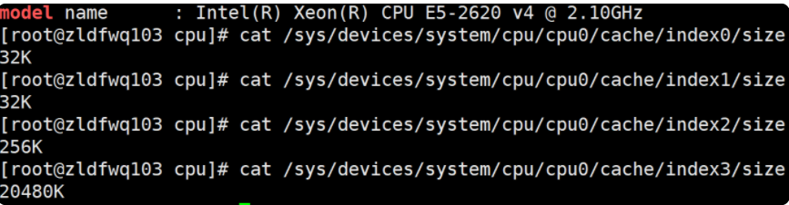
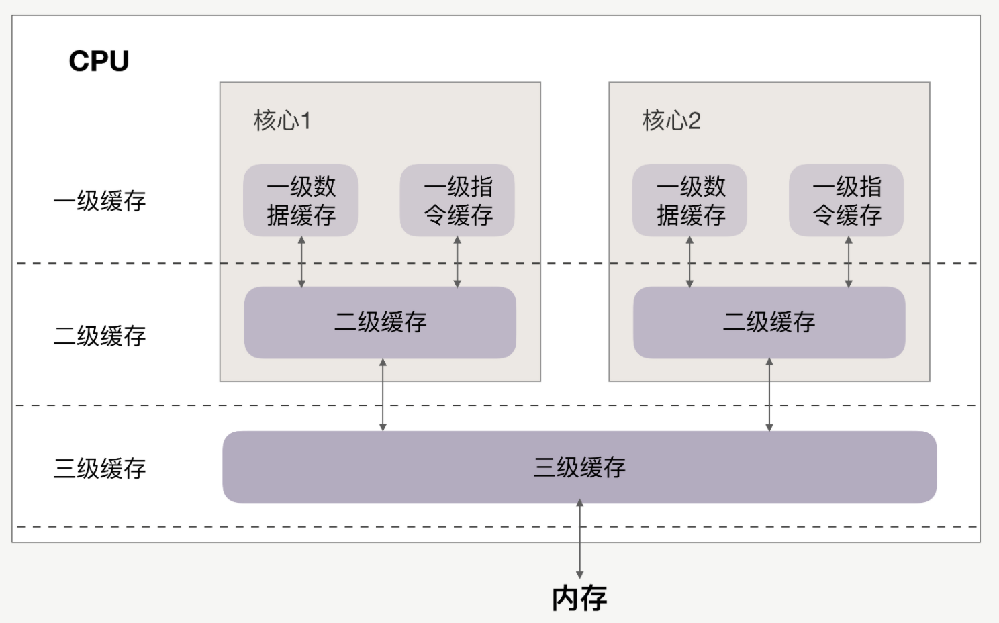
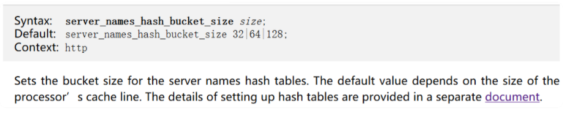
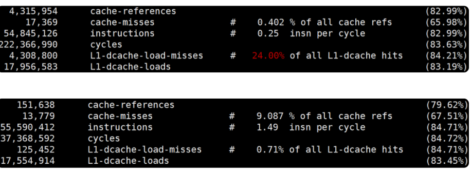
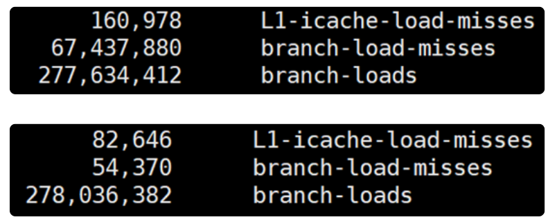

第一节 代码让CPU执行得更快 — CPU缓存
任何代码的执行都依赖 CPU，通常，使用好 CPU 是操作系统内核的工作。然而，当我们编写计算密集型的程序时，CPU 的执行效率就开始变得至关重要。
由于 CPU 缓存由更快的 SRAM 构成（内存是由 DRAM 构成的），而且离 CPU 核心更近，如果运算时需要的输入数据是从 CPU 缓存，而不是内存中读取时，运算速度就会快很多。
所以，了解 CPU 缓存对性能的影响，便能够更有效地编写我们的代码，优化程序性能。
1、CPU 的多级缓存
CPU 缓存离 CPU 核心更近，由于电子信号传输是需要时间的，所以离 CPU 核心越近，缓存的读写速度就越快。但 CPU 的空间很狭小，离 CPU 越近缓存大小受到的限制也越大。所以，综合硬件布局、性能等因素，CPU 缓存通常分为大小不等的三级缓存。
CPU 缓存的材质 SRAM 比内存使用的 DRAM 贵许多，所以不同于内存动辄以 GB 计算，它的大小是以 MB 来计算的。
比如，在我的 Linux 系统上，离 CPU 最近的一级缓存是 32KB，二级缓存是 256KB，最大的三级缓存则是 20MB。

$ getconf -a | grep CACHE
LEVEL1_ICACHE_SIZE 32768
LEVEL1_ICACHE_ASSOC 8
LEVEL1_ICACHE_LINESIZE 64
LEVEL1_DCACHE_SIZE 32768
LEVEL1_DCACHE_ASSOC 8
LEVEL1_DCACHE_LINESIZE 64
LEVEL2_CACHE_SIZE 262144
LEVEL2_CACHE_ASSOC 4
LEVEL2_CACHE_LINESIZE 64
LEVEL3_CACHE_SIZE 16777216
LEVEL3_CACHE_ASSOC 16
LEVEL3_CACHE_LINESIZE 64
LEVEL4_CACHE_SIZE 0
LEVEL4_CACHE_ASSOC 0
LEVEL4_CACHE_LINESIZE 0

缓存要比内存快很多。
CPU 访问一次内存通常需要 100 个时钟周期以上，而访问一级缓存只需要 4~5 个时钟周期，二级缓存大约 12 个时钟周期，三级缓存大约 30 个时钟周期（对于 2GHZ 主频的 CPU 来说，一个时钟周期是 0.5 纳秒。
如果 CPU 所要操作的数据在缓存中，则直接读取，这称为缓存命中。命中缓存会带来很大的性能提升，因此，我们的代码优化目标是提升 CPU 缓存的命中率。
当然，缓存命中率是很笼统的，具体优化时还得一分为二。
比如，你在查看 CPU 缓存时会发现有 2 个一级缓存（比如 Linux 上就是上图中的 index0 和 index1），这是因为，CPU 会区别对待指令与数据。比如，“1+1=2”这个运算，“+”就是指令，会放在一级指令缓存中，而“1”这个输入数字，则放在一级数据缓存中。
虽然在冯诺依曼计算机体系结构中，代码指令与数据是放在一起的，但执行时却是分开进入指令缓存与数据缓存的，因此我们要分开来看二者的缓存命中率。
2、提升数据缓存的命中率
访问顺序是如何影响缓存命中率
比如现在要遍历二维数组，其定义如下证的 C/C++、Java
int array[N][N];
用 array[j][i] 和 array[i][j]访问数组元素，哪一种性能更快？
for(i = 0; i < N; i+=1) {
for(j = 0; j < N; j+=1) {
array[i][j] = 0;
}
}
C++ 代码实现中，前者 array[j][i]执行的时间是后者 array[i][j]的 8倍之多
为什么会有这么大的差距呢？
这是因为二维数组 array 所占用的内存是连续的，比如若长度 N 的值为 2，那么内存中从前至后各元素的顺序是：
array[0][0]，array[0][1]，array[1][0]，array[1][1]。
此时内存是跳跃访问的，如果 N 的数值很大，那么操作 array[j][i]时，是没有办法把 array[j+1][i]也读入缓存的。
2 个问题
- 为什么两者的执行时间有约 7、8 倍的差距呢？
- 载入
array[0][0]元素时，缓存一次性会载入多少元素呢？
其实这两个问题的答案都与 CPU Cache Line 相关，它定义了缓存一次载入数据的大小，Linux 上你可以通过 coherency_line_size 配置查看它，通常是 64 字节。
cup cache line一次加载到cpu 高速缓存的字节数(一般64字节), 为了让多核的1,2级高速缓存不失效和被锁(cpu缓存一致性原则)写代码的时候经常会做字节对其,保证一个变量或对象补齐64
$ cat /sys/devices/system/cpu/cpu0/cache/index1/coherency_line_size
64
测试的服务器一次会载入 64 字节至缓存中。
当载入 array[0][0]时，若它们占用的内存不足 64 字节，CPU 就会顺序地补足后续元素。顺序访问的array[i][j]因为利用了这一特点，所以就会比 array[j][i]要快。
也正因为这样，当元素类型是 4 个字节的整数时，性能就会比 8 个字节的高精度浮点数时速度更快，因为缓存一次载入的元素会更多
因此，遇到这种遍历访问数组的情况时，按照内存布局顺序访问将会带来很大的性能提升。
再来看为什么执行时间相差 8 倍。在二维数组中，其实第一维元素存放的是地址，第二维存放的才是目标元素。
由于 64 位操作系统的地址占用 8 个字节（32 位操作系统是 4 个字节），因此，每批 Cache Line 最多也就能载入不到 8 个二维数组元素，所以性能差距大约接近 8 倍。
关于 CPU Cache Line 的应用其实非常广泛，如果你用过 Nginx，会发现它是用哈希表来存放域名、HTTP 头部等数据的，这样访问速度非常快，而哈希表里桶的大小如 server_names_hash_bucket_size，它默认就等于 CPU Cache Line 的值。
由于所存放的字符串长度不能大于桶的大小，所以当需要存放更长的字符串时，就需要修改桶大小，但 Nginx 官网上明确建议它应该是 CPU Cache Line 的整数倍。

为什么要做这样的要求呢？
就是因为按照 cpu cache line（比如 64 字节）来访问内存时，不会出现多核 CPU 下的伪共享问题，可以尽量减少访问内存的次数。
比如，若桶大小为 64 字节，那么根据地址获取字符串时只需要访问一次内存，而桶大小为 50 字节，会导致最坏 2 次访问内存，而 70 字节最坏会有 3 次访问内存。
如果你在用 Linux 操作系统，可以通过一个名叫 Perf的工具直观地验证缓存命中的情况（可以用 yum install perf或者 apt-get install perf 安装这个工具，这个网址中有大量案例可供参考）。
执行 perf stat 可以统计出进程运行时的系统信息（通过 -e 选项指定要统计的事件，如果要查看三级缓存总的命中率，可以指定缓存未命中 cache-misses 事件，以及读取缓存次数 cache-references 事件，两者相除就是缓存的未命中率，用 1相减就是命中率。
类似的，通过 L1-dcache-load-misses 和 L1-dcache-loads可以得到 L1 缓存的命中率），此时你会发现 array[i][j]的缓存命中率远高于 array[j][i]。
当然，perf stat还可以通过指令执行速度反映出两种访问方式的优劣，
如下图所示（instructions 事件指明了进程执行的总指令数，而 cycles 事件指明了运行的时钟周期，二者相除就可以得到每时钟周期所执行的指令数，缩写为 IPC。如果缓存未命中，则 CPU 要等待内存的慢速读取，因此 IPC 就会很低。array[i][j]的 IPC 值也比 array[j][i]要高得多）：

2、提升指令缓存的命中率
说完数据的缓存命中率，再来看指令的缓存命中率该如何提升。
比如，有一个元素为 0 到 255 之间随机数字组成的数组：
int array[N];
for (i = 0; i < TESTN; i++) array[i] = rand() % 256;
接下来要对它做两个操作：
- 一是循环遍历数组，判断每个数字是否小于 128，如果小于则把元素的值置为 0；
- 二是将数组排序。
那么，先排序再遍历速度快，还是先遍历再排序速度快呢？
for(i = 0; i < N; i++) {
if (array [i] < 128) array[i] = 0;
}
sort(array, array +N);
先排序的遍历时间只有后排序的三分之一
这是因为循环中有大量的 if 条件分支，而 CPU含有分支预测器。
当代码中出现 if、switch 等语句时，意味着此时至少可以选择跳转到两段不同的指令去执行。如果分支预测器可以预测接下来要在哪段代码执行（比如 if 还是 else 中的指令），就可以提前把这些指令放在缓存中，CPU 执行时就会很快。
当数组中的元素完全随机时，分支预测器无法有效工作，而当 array 数组有序时，分支预测器会动态地根据历史命中数据对未来进行预测，命中率就会非常高。
还是用Linux 上的 perf来做个验证。使用 -e 选项指明 branch-loads 事件和 branch-load-misses 事件，它们分别表示分支预测的次数，以及预测失败的次数。通过 L1-icache-load-misses 也能查看到一级缓存中指令的未命中情况。
先排序的话分支预测的成功率非常高，而且一级指令缓存的未命中率也有大幅下降。

#define likely(x) __builtin_expect(!!(x), 1)
#define unlikely(x) __builtin_expect(!!(x), 0)
if (likely(a == 1)) …
3、提升多核 CPU 下的缓存命中率
面向一个 CPU 核心谈数据及指令缓存的，然而现代 CPU 几乎都是多核的。
虽然三级缓存面向所有核心，但一、二级缓存是每颗核心独享的。我们知道，即使只有一个 CPU 核心，现代分时操作系统都支持许多进程同时运行。这是因为操作系统把时间切成了许多片，微观上各进程按时间片交替地占用 CPU，这造成宏观上看起来各程序同时在执行。
因此，若进程 A 在时间片 1 里使用 CPU 核心 1，自然也填满了核心 1 的一、二级缓存，当时间片 1 结束后，操作系统会让进程 A 让出 CPU，基于效率并兼顾公平的策略重新调度 CPU 核心 1，以防止某些进程饿死。
如果此时 CPU 核心 1 繁忙，而 CPU 核心 2 空闲，则进程 A 很可能会被调度到 CPU 核心 2 上运行，这样，即使我们对代码优化得再好，也只能在一个时间片内高效地使用 CPU 一、二级缓存了，下一个时间片便面临着缓存效率的问题。
因此，操作系统提供了将进程或者线程绑定到某一颗 CPU 上运行的能力。
如 Linux 上提供了 sched_setaffinity方法实现这一功能，其他操作系统也有类似功能的 API 可用。
当多线程同时执行密集计算，且 CPU 缓存命中率很高时，如果将每个线程分别绑定在不同的 CPU 核心上，性能便会获得非常可观的提升。Perf 工具也提供了 cpu-migrations 事件，它可以显示进程从不同的 CPU 核心上迁移的次数。
4、本节小结
CPU 缓存分为数据缓存与指令缓存，对于数据缓存，我们应在循环体中尽量操作同一块内存上的数据，由于缓存是根据 CPU Cache Line 批量操作数据的，所以顺序地操作连续内存数据时也有性能提升。
对于指令缓存，有规律的条件分支能够让 CPU 的分支预测发挥作用，进一步提升执行效率。对于多核系统，如果进程的缓存命中率非常高，则可以考虑绑定 CPU 来提升缓存命中率。